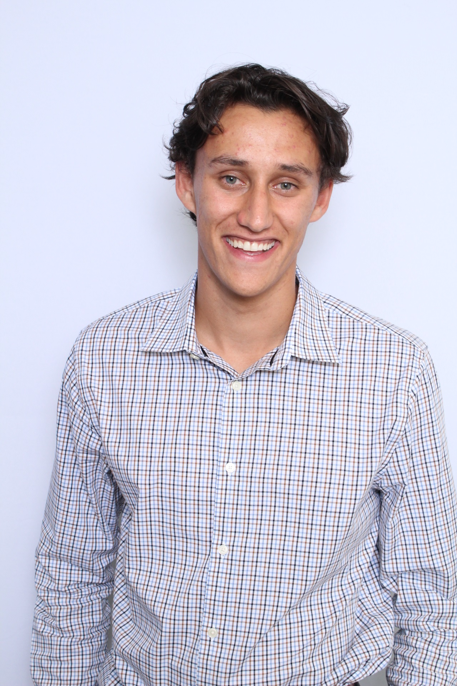

Journalist
Worked daily 12-hour shifts during the 2024 Paris Olympics, clipping viral moments and editing videos for nbcsports.com, Peacock and social media.
Craft newsletter on Mailchimp and post timely content on Instagram, X, Facebook and Reddit during weekly 24-hour shift.
Launched weekly one-hour UMD sports podcast with over 60 episodes. Source and interview athletes and coaches; research segments about little-known alumni athletes, oversee social media accounts. Produced 30-minute scripted podcast on University-wide impact of the deaths of Len Bias and Jordan McNair, including FOIA requests and interviews with teammates and administrators.
Create gamer packages for lacrosse and soccer; produce written and visual content for sports broadcast show; anchor in-focus shows. Produced in-depth podcast and article on Name, Image and Likeness in Spring of 2023.
Researched past newspaper articles, magazine stories and press conferences for storytelling material and assisted with interview production for series about the death of Martha Moxley.